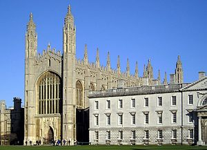

Biografía
Turing nació en Maida Vale, Londres, aunque fue concebido en Chatrapur
(India británica). Su padre Julius Mathison Turing (1873-1944) era
miembro del cuerpo de funcionarios británicos en la India, donde
estaba de permiso en su puesto en el Indian Civil Service (ICS) en la
entonces Presidencia de Madrás y actualmente estado de Odisha. Julius
y su esposa Ethel querían que su hijo Alan naciera en el Reino Unido y
regresaron a Paddington, donde finalmente nació.
Su infancia
Durante su infancia, sus padres viajaban entre Hastings, Reino Unido,
y el Raj Británico debido a que la Administración Colonial en la que
trabajaba su padre seguía en activo, por lo que pasó algunos años
viviendo con su hermano en la casa de un matrimonio retirado del
ejército. Desde muy pequeño Turing mostró un gran interés por la
lectura (se cuenta que aprendió a leer por sí solo en tres semanas),
por los números y los rompecabezas. Sus padres lo inscribieron en el
colegio St. Michael cuando tenía seis años; su profesora se percató
enseguida de la genialidad de Turing. Sus ansias de conocimiento y
experimentación llegaban hasta tal punto que a los ocho años, atraído
por la química, diseñó un pequeño laboratorio en su casa. Su carrera
escolar estuvo marcada, por un lado, por sus aptitudes y su facilidad
por las matemáticas y, por el otro, por su carácter inconformista que
le llevaba a seguir sus propias ideas y apartarse del rígido (e
ilógico, según su parecer) sistema educativo.
Como curiosidad, cabe decir que Turing recorrió alrededor de 90 km en
bicicleta durante la huelga general de 1926 para poder ir a la
escuela, dato que nos hace entender cómo, más adelante, además de
científico, fue un atleta notable de rango casi olímpico. Con poco más
de quince años, entró en contacto con el trabajo de Albert Einstein y,
además de entender sus bases, comprendió sus críticas a las leyes de
Newton a partir de un texto en el que no se explicitaba tal cometido.
Estudios
Entre enero de 1922 y 1926, Turing estudió en la preparatoria
Hazelhurst, una escuela independiente en el pueblo de Frant en Sussex (
hoy East Oriental).
En 1926, con trece años, ingresó en el internado de Sherborne en
Dorset. Su primer día de clase coincidió con una huelga general en
Inglaterra, pero su determinación por asistir a clase era tan grande
que recorrió en solitario, con su bicicleta, los más de 96 km que
separaban Southampton de su escuela, pasando la noche en una posada.
Tal hazaña fue recogida en la prensa local.
La inclinación natural de Turing hacia la matemática y la ciencia no
le atrajo el respeto de sus profesores de Sherborne, cuyo concepto de
educación hacía mayor énfasis en los clásicos. En la escuela de
Sherbone, ganó la mayor parte de los premios matemáticos que se
otorgaban y, además, realizaba experimentos químicos por su cuenta
aunque la opinión del profesorado respecto a la independencia y
ambición de Turing no era demasiado favorable. A pesar de ello, Turing
continuó mostrando una singular habilidad para los estudios que
realmente le gustaban, y llegó a resolver problemas muy avanzados para
su edad (16 años) sin ni siquiera haber estudiado cálculo elemental.
Chistopher Morcom
Christopher Morcom estudiaba junto con Turing en la escuela de
Sherborne y ambos compartían la pasión por la ciencia. Durante las
clases de matemática o física, se intercambiaban notas de comentarios
sobre rompecabezas. Chistopher invitó a Alan a conocer a su madre, una
artista. Alan se enamoró de él. Fue su primer amor y la primera
persona que creyó en sus ideas y con quien podía continuar
desarrollándolas. El 13 de febrero de 1930, solo unas pocas semanas
después de su última temporada en Sherborne, Christopher Morcom
falleció debido a complicaciones de la tuberculosis bovina, contraída
tras beber leche de alguna vaca infectada. Al recordarlo Turing
afirmaba: «Mis recuerdos más vívidos de Chris son casi siempre de las
cosas tan amables que me decía».
Desde entonces la fe religiosa de Turing se hizo pedazos, y se volvió
ateo. También se obsesionó por entender la naturaleza de la
consciencia, su estructura y orígenes. Adoptó la convicción de que
todos los fenómenos, incluyendo el funcionamiento del cerebro humano,
son materialistas. Sin embargo, siguió creyendo en la supervivencia
del espíritu después de la muerte.
La Universidad y sus estudios sobre computabilidad
Debido a su falta de voluntad para esforzarse con la misma intensidad en el estudio de los clásicos que en el de la ciencia y la matemática, Turing suspendió sus exámenes finales varias veces y tuvo que ingresar en la escuela universitaria que eligió en segundo lugar, King's College, Universidad de Cambridge, en vez de en la que era su primera elección, Trinity. Tras su graduación, se trasladó a la Universidad estadounidense de Princeton, donde trabajó con el lógico A. Church. Recibió las enseñanzas de Godfrey Harold Hardy, un respetado matemático que ocupó la cátedra Sadleirian en Cambridge, y que posteriormente, fue responsable de un centro de estudios e investigaciones matemáticas entre 1931 y 1934. En 1935 Turing fue nombrado profesor del King's College.

El King's College de Cambridge, donde estudió en 1931 y se convirtió en miembro en 1935. Su sala de computación lleva actualmente su nombre.
Solución al problema de decisión
El Entscheidungsproblem, que se traduce como «problema de decisión», fue un reto en lógica simbólica para encontrar un algoritmo general que decidiera si una fórmula de cálculo de primer orden es un teorema. El problema fue planteado inicialmente por Leibniz en el siglo XVII luego de construir su máquina mecánica de cálculo. David Hilbert formalizó el problema en el VII Congreso Internacional de Matemáticas (Bolonia, 1928), planteando la búsqueda de un procedimiento algorítimico válido para solucionar las posibles cuestiones matemáticas, a través de tres preguntas:
¿Son las matemáticas completas?
¿Son las matemáticas consistentes?
¿Son las matemáticas decidibles?
Si bien Hilbert suponía que la respuesta a las preguntas era afirmativa, Kurt Gödel, meditante los teoremas de Incompletitud demostró que las dos primeras preguntas no podrían serlo ya que, tal como afirma Gödel:
«En cualquier formalización consistente de las matemáticas que sea lo bastante fuerte para definir el concepto de los números naturales, se puede construir una afirmación que ni se puede demostrar ni se puede refutar dentro de ese sistema», mientras que el primero afirma: «Ningún sistema consistente se puede usar para demostrarse a sí mismo».
Sin embargo, no podían resolver la última pregunta. La dificultad estaba en la ausencia de significado de lo que se entiende por un «procedimiento mecánico». En 1936, Alan Turing en su trabajo Acerca de los números computables, introduce el concepto de la máquina de Turing y, junto a Alonzo Church demostraron ambos que es imposible escribir tal algoritmo. Como consecuencia, es también imposible decidir con un algoritmo general si ciertas frases concretas de la aritmética son ciertas o falsas.
Tesis Church-Turing
La tesis de Church-Turing formula hipotéticamente la equivalencia entre los conceptos de función computable y máquina de Turing, que expresado en lenguaje corriente vendría a ser: «Todo algoritmo es equivalente a una máquina de Turing». No es en sí un teorema matemático: es una afirmación formalmente indemostrable, una hipótesis que, no obstante, tiene una aceptación prácticamente universal.
La tesis Church-Turing postula que cualquier modelo computacional existente tiene las mismas capacidades algorítmicas, o un subconjunto, de las que tiene una máquina de Turing.
La máquina de Turing
En su estudio Los números computables, con una aplicación al Entscheidungsproblem (publicado el 28 de mayo de 1936), Turing reformuló los resultados obtenidos por Kurt Gödel en 1931 sobre los límites de la demostrabilidad y la computación, sustituyendo al lenguaje formal universal descrito por Gödel por lo que hoy se conoce como máquina de Turing, unos dispositivos formales y simples.
Turing demostró que dicha máquina era capaz de resolver cualquier problema matemático que pudiera representarse mediante un algoritmo. Las máquinas de Turing siguen siendo el objeto central de estudio en la teoría de la computación. Llegó a probar que no había ninguna solución para el problema de decisión, Entscheidungsproblem, demostrando primero que el problema de la parada para las máquinas de Turing es irresoluble: no es posible decidir algorítmicamente si una máquina de Turing dada llegará a pararse o no. Aunque su demostración se publicó después de la demostración equivalente de Alonzo Church respecto a su cálculo lambda, el estudio de Turing es mucho más accesible e intuitivo. También fue pionero con su concepto de «máquina universal (de Turing)», con la tesis de que dicha máquina podría realizar las mismas tareas que cualquier otro tipo de máquina. Su estudio también introduce el concepto de números definibles.
Máquinas oracle
La mayor parte de 1937 y 1938 la pasó en la Universidad de Princeton, estudiando bajo la dirección de Alonzo Church. Entre 1938 y 1939 volvió a Inglaterra y estudió filosofía de las matemáticas. En 1938 obtuvo el Doctorado en Princeton; en su discurso introdujo el concepto de hipercomputación, en el que ampliaba las máquinas de Turing con las llamadas máquinas oracle, las cuales permitían el estudio de los problemas para los que no existe una solución algorítmica.
Tras su regreso a Cambridge en 1939, asistió a las conferencias de Ludwig Wittgenstein sobre las bases de las matemáticas. Ambos discutieron y mantuvieron un vehemente desencuentro, ya que Turing defendía el formalismo matemático y Wittgenstein criticaba que la matemática estaba sobrevalorada y no descubría ninguna verdad absoluta.
Análisis criptográfico (desciframiento de códigos)
Un día después de la declaración de guerra de Gran Bretaña, en septiembre de 1939, Turing fue convocado a Bletchley Park, donde se encontraba el Servicio Británico de Descifrado. Las nueve mil personas que trabajaban allí, se dedicaron a intentar interpretar las comunicaciones alemanas cifradas en código morse.
El cifrado lo hacían a través de una máquina de sistema rotatorio llamada Enigma (máquina). Enigma había sido inventada en 1918 por Arthur Scherbius. Era similar a una máquina de escribir, en la cual cada vez que una letra era pulsada, era sustituida por otra mediante el uso de tres rotores internos (las máquinas militares llegaron a usar cinco), cuyo resultado era más de diez mil billones de configuraciones distintas. Debido al carácter portátil de la máquina, los operadores podían estar ubicados en los puestos de mando, interior de los tanques, submarinos, en bombardeos, etc. Independientemente de su locación, los operadores, llevaban las instrucciones de cómo debían colocarse los rotores, y las posiciones cambiaban cada pocos días.
El equipo liderado por Turing, a través de ecuaciones y cálculos, encontraron pautas en los mensajes con lo que pudieron detectar una pequeña parte de su funcionamiento. Sin embargo, todavía no podían descifrarlos. Fue entonces, cuando Turing se preguntó:
¿Y si para luchar contra una máquina como Enigma hiciese falta otra máquina?
El Bombe replicaba la acción de varias máquinas Enigma.
A raíz de esta pregunta, Turing pudo poner en práctica sus teorías: diseñó la máquina Bombe. Bombe buscaba la configuración de los rotores de la máquina alemana, implementando una cadena de deducciones lógicas para cada combinación posible. Gracias a las mejoras del matemático, Gordon Welchman, el 14 de marzo de 1940, el primer prototipo estaba terminado. Al cabo de un tiempo disponían con más de doscientas Bombes.
Los trabajos del Servicio Británico Descifrado, dirigidos por Turing, fueron determinantes para acortar la guerra. Algunos historiadores afirman que su trabajo acortó dos años la duración de la guerra, salvando alrededor de catorce millones de vidas. Al finalizar la guerra, las máquinas Bombe se desmantelaron y todo el trabajo permaneció en secreto hasta los setenta. En 1974 el capitán W. F. Winterbotham escribió el libro The Ultra Secret.
Estudios sobre las primeras computadoras
De 1945 a 1948 Turing vivió en Richmond, Londres, donde trabajó en el Laboratorio Nacional de Física (NPL). En 1947 empezó a trabajar en el diseño del ACE (Automatic Computer Engine o Motor de Computación Automática). Paralelamente, existía un proyecto similar en Estados Unidos llamado EDVAC de Von Neumann. El ACE de Turing se diferenciaba en que incluía la implementación de funciones aritméticas en circuitos electrónicos. Su deseo era crear una máquina que pudiera ser configurada para hacer cálculos algebraicos, desencriptar códigos, manipular archivos y jugar al ajedrez. Aunque diseñar el ACE era factible, el secretismo que reinaba durante la guerra desembocó en retrasos para iniciar el proyecto por lo que Turing se sintió desilusionado.
Tiempo más tarde creó el Abbreviated Code Instruction, que dio origen a los lenguajes de programación. En 1947 se tomó un año sabático en Cambridge, tiempo durante el cual escribió un trabajo pionero sobre la inteligencia artificial que no fue publicado en vida. En 1948, con la ayuda de Frederic Calland Williams, se dio, por primera vez, la demostración del principio de la máquina de Turing.
Mientras se encontraba en Cambridge y a pesar de su ausencia, se siguió construyendo el prototipo piloto del ACE, que ejecutó su primer programa en mayo de 1950. Aunque la versión completa del ACE de Turing jamás fue construida, el diseño de otras computadoras en todo el mundo le debió mucho a su concepción.
El test de Turing es una prueba que propuso Alan Turing buscando una manera de demostrar la existencia de inteligencia en una máquina.
A mediados de 1948 fue nombrado director delegado del laboratorio de computación de la Universidad de Mánchester y trabajó en el software de una de las primeras computadoras reales, la Manchester Mark I. Durante esta etapa también realizó estudios más abstractos y en su artículo de octubre de 1950 «Computing machinery and intelligence» Turing trató el problema de la inteligencia artificial y propuso un experimento que hoy se conoce como test de Turing, con la intención de definir una prueba estándar por la que una máquina podría catalogarse como «sensible» o «sintiente». En el documento, Turing sugirió que en lugar de construir un programa para simular la mente adulta, sería mejor producir uno más simple para simular la mente de un niño y luego someterlo a educación. Una forma invertida de la prueba de Turing se usa ampliamente en Internet, el test CAPTCHA que está diseñado para determinar si un usuario es un humano y no una computadora.
Prueba de Turing
La prueba de Turing es un método para determinar si una máquina puede pensar.
Nace de un juego de imitación, en donde hay tres personas: un interrogador, un hombre y una mujer. El interrogador está separado de los otros dos, y solo puede comunicarse con ellos a través de un lenguaje que entiendan. El objetivo del interrogador es descubrir quién es la mujer, y quién es el hombre, mientras que el de los otros dos, es convencerlo que son la mujer. En su artículo de 1950, «Computing machinery and intelligence», Turing sustituye a uno de los interrogados por una computadora y cambia los objetivos del juego: reconocer a la máquina.
«Una computadora puede ser llamada inteligente si logra engañar a una persona haciéndole creer que es un humano» - Alan Turing.
La forma de hacer pasar la prueba a una máquina consiste básicamente en una persona hablando con una computadora en otra habitación mediante un sistema de chat. Si la persona es incapaz de determinar si habla con un humano o con una computadora, entonces la computadora se considera inteligente.
En el año 2014, por primera vez, el chatbot de Eugene Gootsman, logró convencer a treinta jueces que estaban participando en la prueba de que estaban chateando con un niño ucraniano de trece años.
Estatua del autor y su retrato de fondo.
Primer programa de ajedrez por computadora
Entre 1948 y 1950 en conjunto con un antiguo compañero, D. G. Champernowne, empezó a escribir un programa de ajedrez para un ordenador que aún no existía. En 1952 trató de implementarlo en el Ferranti Mark 1, pero por falta de potencia, el ordenador no fue capaz de ejecutar el programa. En su lugar Turing jugó una partida en la que reprodujo manualmente los cálculos que hubiera hecho el ordenador, costando alrededor de hora y media en efectuar un movimiento. Una de las partidas llegó a registrarse, y el programa perdió frente a un colega de Turing, Alick Glennie. Su test fue significativo, característicamente provocativo y una gran contribución para empezar el debate alrededor de la inteligencia artificial que aún hoy continúa.
Estudios sobre cibernética
Trabajó junto a Norbert Wiener en el desarrollo de la cibernética. Esta rama de estudios se genera a partir de la demanda de sistemas de control que exige el progresivo desarrollo de las técnicas de producción a partir del siglo XX. La cibernética pretende establecer un sistema de comunicación entre el hombre y la máquina como premisa fundamental para administrar los sistemas de control. Sus estudios profundizaron en esta relación estableciendo el concepto de interfaz y cuestionando los límites de simulación del razonamiento humano.
Estudios sobre la formación de patrones y la biología matemática
Turing trabajó desde 1952 hasta que falleció en 1954 en la biología matemática, concretamente en la morfogénesis. Publicó un trabajo sobre esta materia titulado «Fundamentos químicos de la morfogénesis» en 1952. Su principal interés era comprender la filotaxis de Fibonacci, es decir, la existencia de los números de Fibonacci en las estructuras vegetales. Utilizó ecuaciones de reacción-difusión que actualmente son cruciales para entender la formación de patrones en el campo de biología del desarrollo ontogenético (embriología). Sus trabajos posteriores no se publicaron hasta 1992 en el libro Obras completas de A. M. Turing.
Las teorías de Turing han ido ganando la aceptación de biólogos experimentales, como uno de los mecanismos mediante los cuales células que son genéticamente idénticas pueden diferenciarse y dar origen a organismos complejos.
Procesamiento por homosexualidad y muerte de Turing
La carrera profesional de Turing se vio truncada cuando lo procesaron por su homosexualidad. En 1952, Arnold Murray, un amante de Turing, ayudó a un cómplice a entrar en la casa de Turing para robarle. Turing acudió a la policía a denunciar el delito. Durante la investigación policial Turing reconoció su homosexualidad, con lo que se le imputaron los cargos de «indecencia grave y perversión sexual» (los actos de homosexualidad eran ilegales en el Reino Unido en esa época), los mismos que a Oscar Wilde más de 50 años antes.
Convencido de que no tenía de qué disculparse, no se defendió de los cargos y fue condenado. Según su ampliamente difundido proceso judicial, se le dio la opción de ir a prisión o de someterse a castración química mediante un tratamiento hormonal de reducción de la libido. Finalmente escogió las inyecciones de estrógenos, que duraron un año y le produjeron importantes alteraciones físicas, como la aparición de pechos o un apreciable aumento de peso, que lo condujeron a padecer de disfunción eréctil.
En una carta de esta época a su amigo Norman Routledge, Turing escribió en forma de falso silogismo una reflexión, relacionando el rechazo social que provoca la homosexualidad con el desafío intelectual que supone demostrar la posibilidad de inteligencia en los ordenadores. En particular, le preocupaba que los ataques a su persona pudieran oscurecer sus razonamientos sobre la inteligencia artificial:
Turing cree que las máquinas piensan
Turing se acuesta con hombres
Por lo tanto, las máquinas no piensan
Dos años después del juicio, en 1954, falleció por envenenamiento con cianuro, aparentemente tras comerse una manzana envenenada que no llegó a ingerir completamente, en un contexto que se estimó oficialmente como suicidio. Varias personas pensaron que su muerte fue intencionada, aunque su madre intentó negar la causa de su muerte, atribuyéndola a una ingestión accidental provocada por la falta de precauciones de Turing en el almacenamiento de sustancias químicas de laboratorio. Los últimos años de su vida fueron amargos y reservados. Esta muerte no esclarecida ha dado lugar a diversas hipótesis, incluida la del asesinato.
Monumento a Alan Turing en Whitworth Gardens, Mánchester, Reino Unido.
El 10 de septiembre de 2009, el primer ministro del Reino Unido, Gordon Brown, emitió un comunicado declarando sus disculpas en nombre de su gobierno por el trato que recibió Alan Turing durante sus últimos años de vida. Este comunicado fue consecuencia de una movilización pública solicitando al Gobierno que ofreciera disculpas oficialmente por la persecución contra Alan Turing. Sin embargo, en 2012 el gobierno británico de David Cameron denegó el indulto al científico, aduciendo que la homosexualidad era considerada entonces un delito. Finalmente, el 24 de diciembre de 2013 recibió el indulto de todo tipo de culpa, por orden de la reina Isabel II.
Reconocimiento póstumo
Placa conmemorativa en la antigua casa de Turing.
Estatua de Turing en la Universidad de Surrey.
El 23 de junio de 2001 se inauguró una estatua de Turing en Mánchester. Se encuentra en Sackville Park, entre el edificio de la Universidad de Mánchester en la calle de Whitworth y la gay village de la calle del Canal. Coincidiendo con el 50.º aniversario de su muerte, se descubrió una placa conmemorativa en su antiguo domicilio, Hollymeade, en Wilmslow el 7 de junio de 2004.
La Association for Computing Machinery otorga anualmente el Premio Turing a personas destacadas por sus contribuciones técnicas al mundo de la computación. Este premio está ampliamente considerado como el equivalente del Premio Nobel en el mundo de la computación.
El Instituto Alan Turing fue inaugurado por el UMIST (Instituto de Ciencia y Tecnología de la Universidad de Mánchester) y la Universidad de Mánchester en el verano de 2004.
El 5 de junio de 2004 se celebró un acontecimiento conmemorativo de la vida y la obra de Turing en la Universidad de Mánchester, organizado por el British Logic Colloquium y la British Society for the History of Mathematics.
El 28 de octubre de 2004 se descubrió una estatua de bronce de Alan Turing esculpida por John W. Mills en la Universidad de Surrey. La estatua conmemora el 50.º aniversario de la muerte de Turing. Representa a Turing transportando sus libros a través del campus.
El 23 de junio de 2012, día en el que se conmemoró el centenario del nacimiento de Turing, Google presentó entre sus habituales doodles una pequeña máquina de Turing capaz de comparar dos cadenas de caracteres binarios.
Una leyenda urbana asegura que el logo de Apple Computers (mordisco de la manzana) rinde homenaje a Turing y su suicidio comiendo una manzana envenenada con cianuro. Incluso, el arco iris en el logo sería un homenaje a la homosexualidad de Turing. Sin embargo, estas suposiciones fueron desmentidas por Rob Janoff, creador del logo de Apple y de hecho, los colores ni siquiera se muestran en el mismo orden que en la bandera arco iris, dado que esta fue diseñada dos años más tarde de la creación de dicha imagen.
Turing en el cine
En el telefilm británico dirigido por Alex Garland, Ex Machina (2015) se trata de hacer pasar la prueba de Turing a una androide con inteligencia artificial.
El telefilm británico Breaking the Code (1996), en el que Derek Jacobi aparece en el papel de Alan Turing, es una adaptación de la obra de teatro homónima de Hugh Whitemore, que se estrenó en 1986.
The Imitation Game (2014, dirigida por Morten Tyldum, con Benedict Cumberbatch y Keira Knightley) cuenta la vida del matemático Alan Turing y su decisiva influencia en el desarrollo de la Segunda Guerra Mundial. En ella, se explica cómo se descifraron los códigos secretos de la compleja máquina Enigma que utilizaban los nazis para el intercambio de mensajes.
Bletchley Park, serie en Netflix acerca de los trabajos británicos para descifrar los códigos alemanes durante la Segunda Guerra Mundial.
Turing en la Web y otros medios
En la segunda temporada del programa de telerrealidad RuPaul's Drag Race UK, la drag queen Tia Kofi le rindió tributo dentro del runway "UK Gay Icons".
Turing en la literatura
Turing es uno de los personajes de la sección de la Segunda Guerra Mundial del Criptonomicón, de Neal Stephenson.
La obra de teatro Breaking the Code, de Hugh Whitemore, trata sobre la vida y la muerte de Turing.
En la novela de John L. Casti titulada El quinteto de Cambridge (1998), perteneciente al género de ficción científica, uno de los personajes centrales es Alan Turing.
El cuento de ciencia ficción Oracle (2000), de Greg Egan, es protagonizado por un alter ego de Turing en una línea temporal paralela y con un nombre distinto.
En la novela de ciencia-ficción 2001, de Arthur C. Clarke, se hacen constantes referencias a Turing y a su test de máquinas en el caso de HAL.
En la novela de Edmundo Paz Soldán titulada El delirio de Turing (2003), uno de los personajes se inspira en Turing y a otro le ponen de sobrenombre el mismo.
En la novela de ciencia-ficción Neuromante, de William Gibson, se menciona a La Policía Turing, que vigila la aparición de inteligencias artificiales en el ciberespacio.
En la novela La tienda de los suicidas, de Jean Teulé, uno de los hijos de la familia Tuvache lleva el nombre de Alan por Alan Turing.
En la novela gráfica "Enigma: La extraña vida de Alan Turing" podemos encontrar una biografía de Alan Turing escrita por Francesca Riccioni e ilustrada por Tuono Pettinato traducida al castellano por Víctor Balcells Matas para NORMA Editorial (2015).
En la novela El enigma Turing de David Lagercrantz (Áncora & Delfín, 2018), se reconstruye la investigación policial que Scotland Yard llevó a cabo cuando Turing fue encontrado muerto en su casa de Wilmslow, Inglaterra.
En la novela "Máquinas como yo" de Ian McEwan aparece en un mundo con ligeros cambios al real, en el que Turing no muere tan pronto.
En la novela "La utopía de Turing" o "La opción de Turing" de Harry Harrison y Marvin Minski (1992), se relata como una inteligencia artificial es integrada con un ser humano.
Turing en la música
En el 2004 nació en Barcelona el colectivo audiovisual de electrónica La Màquina de Turing en alusión al trabajo de Turing, publicaron en 2010 un EP llamado Antídot bajo licencia GNU GPL.
El dúo musical Matmos publicó en 2006 un EP de tres canciones llamado For Alan Turing. En uno de sus temas, una de las máquinas Enigma originales es sampleada.
El grupo Hidrogenesse publicó en 2012 su disco Un dígito binario dudoso. Recital para Alan Turing, que también está dedicado al matemático.
La banda madrileña Nostalghia publicó a finales de enero de 2019 el álbum Sociedad Turing en alusión al británico